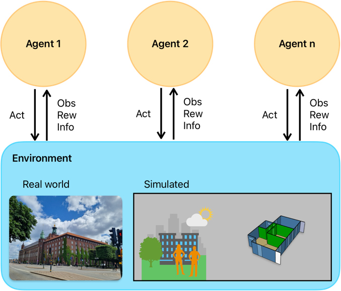
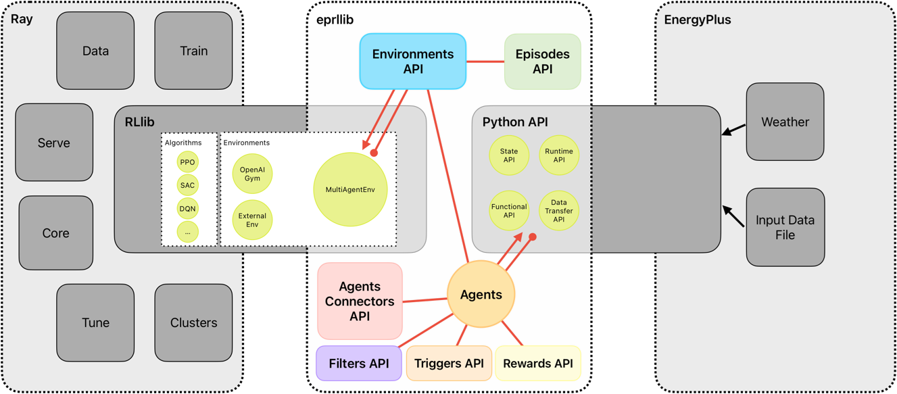

Getting Started#
Understand how eprllib is organized is the key to using it effectively! This guide will
help you get started with using eprllib for building control and energy optimization
through Reinforcement Learning (RL).
eprllib leverages RL, a powerful machine learning technique, to develop intelligent
agents that can interact with building simulations. In RL, agents learn to make decisions
by interacting with an environment, taking actions, receiving observations, and obtaining
rewards. This interaction is used to learn an optimal policy, which is a strategy that
maps observations to actions.
A scheme of multiple agents interacting with an environment (real or simulated) can be visualized in the following diagram, representing a Markov Decision Process (MDP), the mathematical framework underlying RL:
{kind=link}

Figure 1: Schematic representation of a Markov Decision Process (MDP) in Reinforcement Learning.#
eprllib is designed to facilitate the application of RL in building control and energy
optimization. It provides tools for defining the environment, configuring agents, and integrating
with powerful RL libraries, like RLlib is.
Deep Reinforcement Learning (DRL)#
During the learning process, the RL algorithm attempts to predict the cumulative reward that the
agent will receive if it follows a certain policy. This prediction can be represented by a Value
function, denoted as V(obs), or an Action-Value function, denoted as Q(obs, act).
A modern approach to predicting these V or Q functions involves using deep neural networks (DNNs)
to approximate these values. When DNNs are used, the methodology is referred to as
Deep Reinforcement Learning (DRL). In this context, the DNN model is often referred to as the policy.
In essence, the policy is a complex function that, given an observation, outputs the best action to take. At the same time, depending on the algorithm, the policy can also output the predicted value of taking that action in that observation. A deeper understanding of the specific DRL algorithm you choose to use will help you configure the policy and the training process effectively. Coonsult the algorithm’s documentation of RLlib for more details on how the policy is structured and how it learns from the interactions with the environment. Each algorithm has a reference paper that can be consulted for a deeper understanding of the learning process and the structure of the policy.
A bridge between EnergyPlus and RLlib#
The intention of eprllib is to connect two powerful tools: EnergyPlus and RLlib. The aim is to create
a seamless integration that allows users to leverage the strengths of both tools for building control and energy
optimization. Also, we hope to use this library as a repository of resources, examples, and best practices for
applying DRL in the context of building simulations. The modular design of eprllib allows for flexibility and
extensibility, enabling users to customize their environments, agents, and training processes according to their
specific needs but also to share their configurations and results with the community.
EnergyPlus is used to model the building environment. It simulates the building’s energy performance and provides the environment with which the RL agent interacts. EnergyPlus
RLlib is a framework for Deep Reinforcement Learning (DRL).
eprllibuses RLlib to train, evaluate, save, and restore policies. RLlib
In essence, EnergyPlus provides the simulated world, and RLlib provides the tools to train the agent within that world.
{kind=link}

Figure 2: Overview of eprllib and EnergyPlus interaction.#
eprllib communicates with EnergyPlus through its Python API. This allows eprllib to:
Read sensor data from the EnergyPlus simulation.
Set actuator values in the EnergyPlus simulation.
Control the simulation flow (e.g., advance time steps).
DELETE ALL AFTER THIS LINE
Running a Simple Experiment with eprllib and ray.rllib#
Now that you have a basic understanding of the concepts, let’s walk through a simple experiment using
eprllib and RLlib. This example will demonstrate the core steps involved in setting up and training an agent.
Steps:
Define the Environment: Use EnergyPlus to create or load a building model that will serve as the environment for the RL agent.
Define the Agent: Specify the agent’s actions, observations, and reward structure. This is done using
eprllib’s configuration tools.Configure the RL Algorithm: Choose an appropriate RL algorithm from RLlib and configure its hyperparameters.
Train the Agent: Run the training process, allowing the agent to interact with the EnergyPlus environment and learn an optimal policy.
Evaluate the Agent: Assess the performance of the trained agent in the EnergyPlus environment.
Save and Restore the Agent: Save the trained agent to use it in the future.
Example:
The following code provides a basic outline of how to set up and train an agent using eprllib. This example
uses a simplified environment and agent configuration for clarity.
We start defining an eprllib.Environment.EnvironmentConfig object:
1from eprllib.Environment.EnvironmentConfig import EnvironmentConfig
2
3eprllib_config = EnvironmentConfig()
After that, we need to configurate it. A first step could be configurate the general aspects of the environment.
1eprllib_config.generals(
2 epjson_path="path/to/your/model.epJSON", # Replace with your EPJSON file.
3 epw_path="path/to/your/weather.epw", # Replace with your EPW file.
4 output_path="path/to/your/output/folder", # Replace with your folder path.
5 ep_terminal_output=False,
6 timeout=10,
7 evaluation=False,
8)
Once we have defined the paths necessary to work with eprllib and all the dependencies
like EnergyPlus, we can define the agents configurations.
1# Import Specs to facilitate the configuration of the agent.
2from eprllib.Agents.AgentSpec import AgentSpec
3from eprllib.Agents.ObservationSpec import ObservationSpec
4from eprllib.Agents.ActionSpec import ActionSpec
5from eprllib.Agents.Rewards.RewardSpec import RewardSpec
6from eprllib.Agents.ActionMappers.ActionMapperSpec import ActionMapperSpec
7from eprllib.Agents.Filters.FilterSpec import FilterSpec
8
9# Here you must to provide with custom implementations, but for the sake of simplicity we will use the base classes.
10from eprllib.Agents.ActionMappers.BaseActionMapper import BaseActionMapper
11from eprllib.Agents.Filters.BaseFilter import BaseFilter
12from eprllib.Agents.Rewards.BaseReward import BaseReward
13
14eprllib_config.agents(
15 agents_config={
16 # Here we will configurate only one agent, but you can include more.
17 "agent_1": AgentSpec(
18 # Observation variables definition.
19 observation=ObservationSpec(
20 variables=[
21 ("Site Outdoor Air Drybulb Temperature", "Environment"),
22 ("Zone Mean Air Temperature", "Thermal Zone"),
23 ],
24 meters=[
25 "Electricity:Building",
26 ],
27 ),
28 # Actuators that the agent can control.
29 action=ActionSpec(
30 actuators={
31 "Heating Actuator": ("Schedule:Compact", "Schedule Value", "heating_setpoint"),
32 "Cooling Actuator": ("Schedule:Compact", "Schedule Value", "cooling_setpoint"),
33 "Availability Actuator": ("Schedule:Constant", "Schedule Value", "HVAC_OnOff"),
34 },
35 ),
36 # Filter configuration.
37 filter=FilterSpec(
38 filter_fn=BaseFilter,
39 filter_fn_config={},
40 ),
41 # Trigger configuration.
42 action_mapper=ActionMapperSpec(
43 action_mapper=BaseActionMapper,
44 action_mapper_config={},
45 ),
46 # Reward configuration.
47 reward=RewardSpec(
48 reward_fn=BaseReward,
49 reward_fn_config={},
50 ),
51 ),
52 }
53)
Now we have an agent configured. We need to define the Connectors class that we will use.
> .. note:: The Connectors class is a fundamental component of the agent’s behavior,
> ands it defines how agents interact with each other. It is shared by all agents in the
> environment, which is why it is explained in a separate section. In the current version
> of eprllib, the Connectors class also provides a method to index the names of
> the agents’ observation parameters. This means that it must be defined in concordance
> with all the Filter functions of all agents.
For the sake of simplicity, we will use the base class of the Connectors. You need to provide
your own implementation of the Connectors class to define how the agents interact with each
other in your specific use case and how is related with the Filter configured.
1from eprllib.Connectors.BaseConnector import BaseConnector
2
3eprllib_config.connect(
4 connector_fn=BaseConnector,
5 connector_fn_config={},
6)
The model can be take as is configured from EnergyPlus or you can apply an Episodes class to
change the behavior of the environment between episodes. If you want to use the model as is, you
can use the DefaultEpisode class that comes with eprllib.
1from eprllib.Episodes.DefaultEpisode import DefaultEpisode
2
3eprllib_config.episodes(
4 episode_fn = DefaultEpisode,
5 episode_fn_config = {}
6)
Now we build the configuration of the environment.
1env_config = eprllib_config.build()
Finally, you can register the environment and introduce it in the configuration of RLlib. To register
the environment we use the ray.tune.register_env function. Consider that before register the
environment the ray serve must to be inicialized.
1from eprllib.Environment.Environment import Environment
2import ray
3from ray.tune import register_env
4
5ray.init()
6
7register_env("eprllib_env", env_creator=lambda args: Environment(args))
In the configuration of rllib you need to configurate the environment and all the others parameters
that your algorithm need. Here we show how to configurate the environment in a PPO algorithm.
1from ray.rllib.algorithms.ppo.ppo import PPOConfig
2
3config = ppo.PPOConfig()
4# Configure the PPO algorithm
5config = config.environment(
6 env="eprllib_env", # Use the registered environment name
7 env_config=env_config # Here is the builded configuration of the environment with eprllib.
8 )
9
10# eprllib is a multiagent environment, for that reason you need to configurate the multi_agent policy.
11config = config.multi_agent(
12 policies={
13 'single_policy': None
14 },
15 policy_mapping_fn=lambda agent_id, episode, worker, **kwargs: 'single_policy',
16)
17# Build the algorithm.
18algorithm = config.build()
With the algorithm builded, you can now train it:
1from ray.tune.logger import pretty_print
2
3# Train the agent for a few iterations
4for i in range(5):
5 result = algorithm.train()
6 print(f"Training iteration {i + 1}:")
7 print(pretty_print(result))
8
9# Save the trained agent
10checkpoint_path = algorithm.save()
11print(f"Checkpoint saved to {checkpoint_path}")
12
13# Restore the agent from the checkpoint
14algorithm.restore(checkpoint_path)
15print(f"Checkpoint restored from {checkpoint_path}")
16
17# --- End ---
18ray.shutdown()
Explanation#
Environment Configuration:
We start by creating an
EnvironmentConfigobject. This object holds all the information about the EnergyPlus environment, such as the EPJSON file, the EPW file, and the output path.We use the
eprllib_config.generals()method to set these general parameters.You’ll need to replace the placeholder paths with your actual file paths.
Agent Configuration:
We define the agent’s behavior using
eprllib_config.agents().We specify the agent’s observations (what it can see), actions (what it can do), rewards (what it’s trying to maximize), filters and action mappers.
In this simplified example, the agent observes the outdoor air temperature and the zone mean air temperature.
The agent can control the heating and cooling setpoints and the HVAC on/off.
The reward function is a placeholder in this example.
The filter and action mapper are defined.
Episode Configuration:
We define the episode configuration using
eprllib_config.episodes().In this example, the episode function is a placeholder.
RLlib Configuration:
We initialize Ray, which is the framework that RLlib uses for distributed computing.
We register our environment with Ray using
register_env.We build the environment configuration using
eprllib_config.build().We configure the PPO algorithm using
ppo.PPOConfig().We specify the environment, the framework (PyTorch), and the number of rollout workers (0 for simplicity).
We define a simple neural network model with two hidden layers of 64 units each.
We define a single policy.
We build the algorithm using
config.build().
Training:
We train the agent for a few iterations using a
forloop andalgorithm.train().The
pretty_print()function is used to display the training results.
Save and Restore:
We save the trained agent to a checkpoint using
algorithm.save().We restore the agent from the checkpoint using
algorithm.restore().
End:
We shutdown the ray.
This example provides a basic framework for training an agent with eprllib and RLlib. You can expand upon this example by adding more complex environment configurations, agent behaviors, and reward functions.
Next Steps:
Replace Placeholders: Replace the placeholder file paths and reward function with your actual values.
Run the Code: Run the code to see the agent training.
Experiment: Modify the code to explore different environment configurations, agent behaviors, and hyperparameters.
This simplified example should give you a good starting point for using eprllib and RLlib.